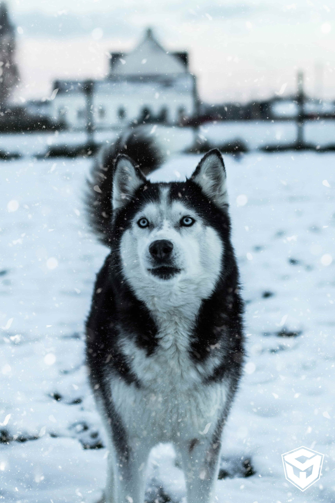
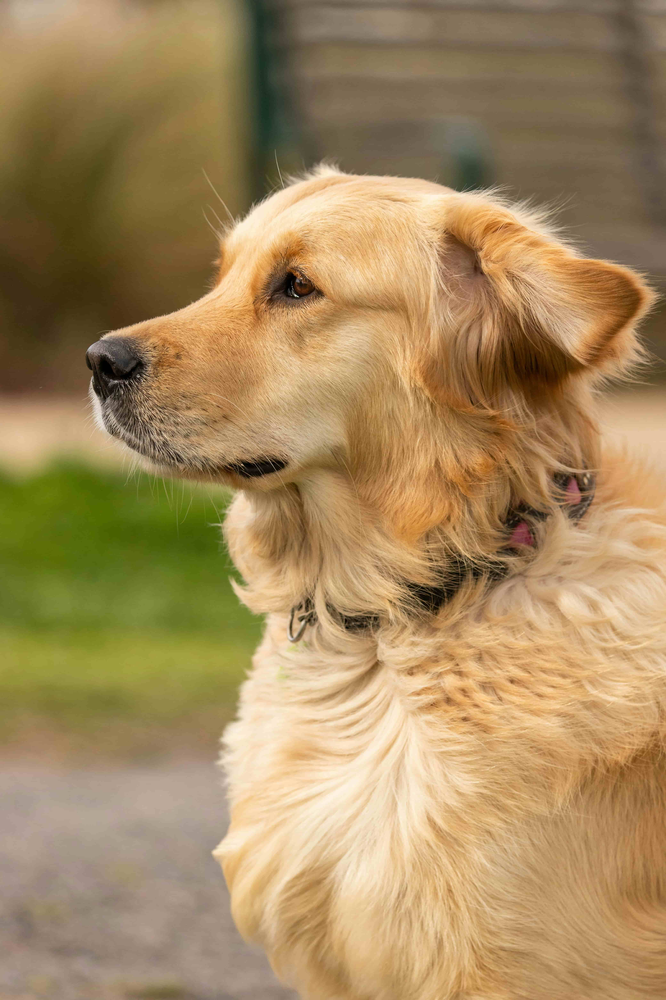
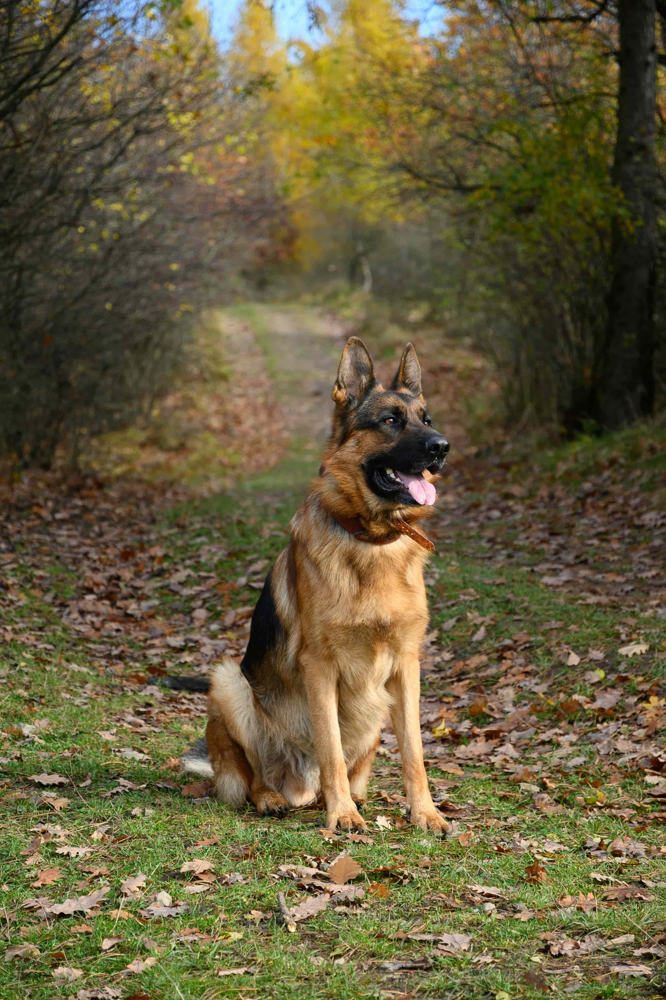
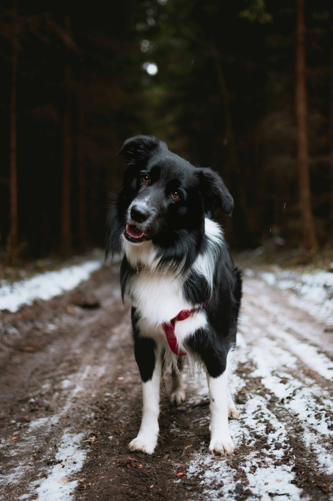

Patas & Pelos
- 
- 
- 
- 
Husky Siberiano
O Husky Siberiano é uma raça de porte médio, famosa por sua aparência semelhante à de um lobo, com olhos azuis ou heterocromáticos (um olho de cada cor). Originários da Sibéria, foram criados como cães de trenó, conhecidos por sua resistência e habilidade para trabalhar em condições extremas. São cães enérgicos, independentes e sociáveis, mas podem ser teimosos e precisam de bastante exercício para evitar comportamentos destrutivos.
Golden Retriever
O Golden Retriever é uma raça de porte médio a grande, conhecida por seu temperamento amigável, dócil e inteligente. Eles possuem uma pelagem dourada que pode variar de tons claros a escuros. São cães muito ativos, adoram atividades ao ar livre e são excelentes nadadores. Devido à sua inteligência e disposição para agradar, são frequentemente utilizados como cães-guia, de terapia e em operações de busca e resgate.
Pastor Alemão
O Pastor Alemão é uma raça de porte grande, reconhecida por sua inteligência, lealdade e versatilidade. Com uma aparência robusta e atlética, eles são frequentemente usados em funções de trabalho, como cães de polícia, militares e de serviço. Eles são protetores, fáceis de treinar e têm um forte instinto de guarda, o que os torna excelentes cães de família e de trabalho.
Border Collie
O Border Collie é uma raça de porte médio, conhecida por sua inteligência excepcional e habilidades de pastoreio. Eles possuem uma pelagem que pode ser lisa ou levemente ondulada, geralmente preta e branca, mas também podem apresentar outras cores. São cães extremamente energéticos e precisam de muito exercício físico e mental. Devido à sua inteligência e disposição para aprender, são frequentemente vistos em competições de obediência, agilidade e trabalho de pastoreio.
FAQ
- Qual é a melhor maneira de treinar um filhote?
- Comece o treinamento desde cedo, usando reforço positivo e sessões curtas e frequentes. Seja paciente e consistente, e recompense o bom comportamento com guloseimas ou elogios.
- Com que frequência devo levar meu cachorro ao veterinário?
- Filhotes devem visitar o veterinário com mais frequência para vacinas e check-ups. Cães adultos geralmente precisam de check-ups anuais e vacinas regulares.
- Qual é a melhor dieta para o meu cachorro?
- A melhor dieta para o seu cachorro dependerá de sua idade, raça e nível de atividade. Consulte o seu veterinário para obter recomendações específicas.
- Como posso saber se meu cachorro está doente?
- Fique atento a mudanças no comportamento do seu cachorro, como letargia, perda de apetite ou vômitos. Se você notar algo incomum, entre em contato com o seu veterinário imediatamente.
No nosso canil
Contato

- contato@patasepelos.com
- +55 (22) 9999-9999
- Rua Barão, nº 22
- Rio de Janeiro - RJ
- Doe 0 bitcoin para nos ajudar
- Seg à Sex das 8 às 18